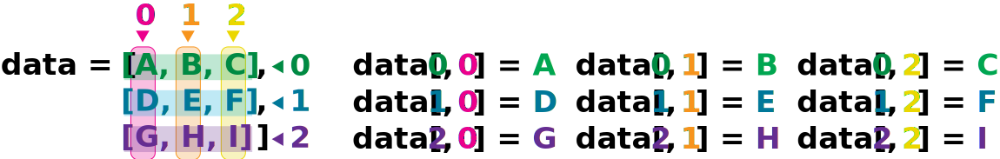

Analyzing Patient Data#
Objectives
Explain what a library is and what libraries are used for.
Import a Python library and use the functions it contains.
Read tabular data from a file into a program.
Select individual values and subsections from data.
Perform operations on arrays of data.
Questions
How can I process tabular data files in Python?
Scenario: A Miracle Arthiritis Inflamation Cure#
Our imaginary colleague “Dr. Maverick” has invented a new miracle drug that promises to cure arthritis inflammation flare-ups after only 3 weeks since initially taking the medication! Naturally, we wish to see the clinical trial data, and after months of asking for the data they have finally provided us with a CSV spreadsheet containing the clinical trial data.
The CSV file contains the number of inflammation flare-ups per day for the 60 patients in the initial clinical trial, with the trial lasting 40 days. Each row corresponds to a patient, and each column corresponds to a day in the trial. Once a patient has their first inflammation flare-up they take the medication and wait a few weeks for it to take effect and reduce flare-ups.
To see how effective the treatment is we would like to:
Calculate the average inflammation per day across all patients.
Plot the result to discuss and share with colleagues.

Data Format#
The data sets are stored in comma-separated values (CSV) format:
each row holds information for a single patient,
columns represent successive days.
The first three rows of our first file look like this:
0,0,1,3,1,2,4,7,8,3,3,3,10,5,7,4,7,7,12,18,6,13,11,11,7,7,4,6,8,8,4,4,5,7,3,4,2,3,0,0
0,1,2,1,2,1,3,2,2,6,10,11,5,9,4,4,7,16,8,6,18,4,12,5,12,7,11,5,11,3,3,5,4,4,5,5,1,1,0,1
0,1,1,3,3,2,6,2,5,9,5,7,4,5,4,15,5,11,9,10,19,14,12,17,7,12,11,7,4,2,10,5,4,2,2,3,2,2,1,1
Each number represents the number of inflammation bouts that a particular patient experienced on a given day.
For example, value “6” at row 3 column 7 of the data set above means that the third patient was experiencing inflammation six times on the seventh day of the clinical study.
Words are useful, but what’s more useful are the sentences and stories we build with them. Similarly, while a lot of powerful, general tools are built into Python, specialized tools built up from these basic units live in libraries. that can be called upon when needed.
Loading data into Python#
To begin processing the clinical trial inflammation data, we need to load it into Python. We can do that using a library called NumPy, which stands for Numerical Python. In general, you should use this library when you want to do fancy things with lots of numbers, especially if you have matrices or arrays. To tell Python that we’d like to start using NumPy, we need to import it:
import numpy
Importing a library is like getting a piece of lab equipment out of a storage locker and setting it up on the bench. Libraries provide additional functionality to the basic Python package, much like a new piece of equipment adds functionality to a lab space. Just like in the lab, importing too many libraries can sometimes complicate and slow down your programs - so we only import what we need for each program.
Once we’ve imported the library, we can ask the library to read our data file for us:
numpy.loadtxt(fname='inflammation-01.csv', delimiter=',')
array([[ 0., 0., 1., ..., 3., 0., 0.],
[ 0., 1., 2., ..., 1., 0., 1.],
[ 0., 1., 1., ..., 2., 1., 1.],
...,
[ 0., 1., 1., ..., 1., 1., 1.],
[ 0., 0., 0., ..., 0., 2., 0.],
[ 0., 0., 1., ..., 1., 1., 0.]])
The expression numpy.loadtxt(...) is a function call
that asks Python to run the function loadtxt which
belongs to the numpy library.
The dot notation in Python is used most of all as an object attribute/property specifier or for invoking its method. object.property will give you the object.property value,
object_name.method() will invoke on object_name method.
As an example, John Smith is the John that belongs to the Smith family.
We could use the dot notation to write his name smith.john,
just as loadtxt is a function that belongs to the numpy library.
numpy.loadtxt has two parameters: the name of the file
we want to read and the delimiter that separates values
on a line. These both need to be character strings
(or strings for short), so we put them in quotes.
Since we haven’t told it to do anything else with the function’s output,
the notebook displays it.
In this case,
that output is the data we just loaded.
By default,
only a few rows and columns are shown
(with ... to omit elements when displaying big arrays).
Note that, to save space when displaying NumPy arrays, Python does not show us trailing zeros,
so 1.0 becomes 1..
Our call to numpy.loadtxt read our file
but didn’t save the data in memory.
To do that,
we need to assign the array to a variable. In a similar manner to how we assign a single
value to a variable, we can also assign an array of values to a variable using the same syntax.
Let’s re-run numpy.loadtxt and save the returned data:
data = numpy.loadtxt(fname='inflammation-01.csv', delimiter=',')
This statement doesn’t produce any output because we’ve assigned the output to the variable data.
If we want to check that the data have been loaded,
we can print the variable’s value:
print(data)
[[ 0. 0. 1. ..., 3. 0. 0.]
[ 0. 1. 2. ..., 1. 0. 1.]
[ 0. 1. 1. ..., 2. 1. 1.]
...,
[ 0. 1. 1. ..., 1. 1. 1.]
[ 0. 0. 0. ..., 0. 2. 0.]
[ 0. 0. 1. ..., 1. 1. 0.]]
Now that the data are in memory,
we can manipulate them.
First,
let’s ask what type of thing data refers to:
print(type(data))
<class 'numpy.ndarray'>
The output tells us that data currently refers to
an N-dimensional array, the functionality for which is provided by the NumPy library.
These data correspond to arthritis patients’ inflammation.
The rows are the individual patients, and the columns
are their daily inflammation measurements.
Data Type#
A Numpy array contains one or more elements
of the same type. The type function will only tell you that
a variable is a NumPy array but won’t tell you the type of
thing inside the array.
We can find out the type
of the data contained in the NumPy array.
print(data.dtype)
float64
This tells us that the NumPy array’s elements are floating-point numbers.
With the following command, we can see the array’s shape:
print(data.shape)
(60, 40)
The output tells us that the data array variable contains 60 rows and 40 columns. When we
created the variable data to store our arthritis data, we did not only create the array; we also
created information about the array, called members or
attributes. This extra information describes data in the same way an adjective describes a noun.
data.shape is an attribute of data which describes the dimensions of data. We use the same
dotted notation for the attributes of variables that we use for the functions in libraries because
they have the same part-and-whole relationship.
If we want to get a single number from the array, we must provide an index in square brackets after the variable name, just as we do in math when referring to an element of a matrix. Our inflammation data has two dimensions, so we will need to use two indices to refer to one specific value:
print('first value in data:', data[0, 0])
first value in data: 0.0
print('middle value in data:', data[29, 19])
middle value in data: 16.0
The expression data[29, 19] accesses the element at row 30, column 20. While this expression may
not surprise you,
data[0, 0] might.
Programming languages like Fortran, MATLAB and R start counting at 1
because that’s what human beings have done for thousands of years.
Languages in the C family (including C++, Java, Perl, and Python) count from 0
because it represents an offset from the first value in the array (the second
value is offset by one index from the first value). This is closer to the way
that computers represent arrays (if you are interested in the historical
reasons behind counting indices from zero, you can read
Mike Hoye’s blog post).
As a result,
if we have an M×N array in Python,
its indices go from 0 to M-1 on the first axis
and 0 to N-1 on the second.
It takes a bit of getting used to,
but one way to remember the rule is that
the index is how many steps we have to take from the start to get the item we want.

In the Corner#
What may also surprise you is that when Python displays an array,
it shows the element with index [0, 0] in the upper left corner
rather than the lower left.
This is consistent with the way mathematicians draw matrices
but different from the Cartesian coordinates.
The indices are (row, column) instead of (column, row) for the same reason,
which can be confusing when plotting data.
Slicing data#
An index like [30, 20] selects a single element of an array,
but we can select whole sections as well.
For example,
we can select the first ten days (columns) of values
for the first four patients (rows) like this:
print(data[0:4, 0:10])
[[ 0. 0. 1. 3. 1. 2. 4. 7. 8. 3.]
[ 0. 1. 2. 1. 2. 1. 3. 2. 2. 6.]
[ 0. 1. 1. 3. 3. 2. 6. 2. 5. 9.]
[ 0. 0. 2. 0. 4. 2. 2. 1. 6. 7.]]
The slice 0:4 means, “Start at index 0 and go up to,
but not including, index 4”. Again, the up-to-but-not-including takes a bit of getting used to,
but the rule is that the difference between the upper and lower bounds is the number of values in
the slice.
We don’t have to start slices at 0:
print(data[5:10, 0:10])
[[ 0. 0. 1. 2. 2. 4. 2. 1. 6. 4.]
[ 0. 0. 2. 2. 4. 2. 2. 5. 5. 8.]
[ 0. 0. 1. 2. 3. 1. 2. 3. 5. 3.]
[ 0. 0. 0. 3. 1. 5. 6. 5. 5. 8.]
[ 0. 1. 1. 2. 1. 3. 5. 3. 5. 8.]]
We also don’t have to include the upper and lower bound on the slice. If we don’t include the lower bound, Python uses 0 by default; if we don’t include the upper, the slice runs to the end of the axis, and if we don’t include either (i.e., if we use ‘:’ on its own), the slice includes everything:
small = data[:3, 36:]
print('small is:')
print(small)
The above example selects rows 0 through 2 and columns 36 through to the end of the array.
small is:
[[ 2. 3. 0. 0.]
[ 1. 1. 0. 1.]
[ 2. 2. 1. 1.]]
Analyzing data#
NumPy has several useful functions that take an array as input to perform operations on its values.
If we want to find the average inflammation for all patients on
all days, for example, we can ask NumPy to compute data’s mean value:
print(numpy.mean(data))
6.14875
mean is a function that takes an array as an argument.
Not All Functions Have Input#
Generally, a function uses inputs to produce outputs. However, some functions produce outputs without needing any input. For example, checking the current time doesn’t require any input.
import time
print(time.ctime())
Sat Mar 26 13:07:33 2016
For functions that don’t take in any arguments,
we still need parentheses (())
to tell Python to go and do something for us.
Let’s use three other NumPy functions to get some descriptive values about the dataset. We’ll also use multiple assignment, a convenient Python feature that will enable us to do this all in one line.
maxval, minval, stdval = numpy.amax(data), numpy.amin(data), numpy.std(data)
print('maximum inflammation:', maxval)
print('minimum inflammation:', minval)
print('standard deviation:', stdval)
Here we’ve assigned the return value from numpy.amax(data) to the variable maxval, the value
from numpy.amin(data) to minval, and so on.
maximum inflammation: 20.0
minimum inflammation: 0.0
standard deviation: 4.61383319712
Mystery Functions in IPython#
How did we know what functions NumPy has and how to use them?
If you are working in IPython or in a Jupyter Notebook, there is an easy way to find out.
If you type the name of something followed by a dot, then you can use
tab completion
(e.g. type numpy. and then press Tab)
to see a list of all functions and attributes that you can use. After selecting one, you
can also add a question mark (e.g. numpy.cumprod?), and IPython will return an
explanation of the method! This is the same as doing help(numpy.cumprod).
Similarly, if you are using the “plain vanilla” Python interpreter, you can type numpy.
and press the Tab key twice for a listing of what is available. You can then use the
help() function to see an explanation of the function you’re interested in,
for example: help(numpy.cumprod).
When analyzing data, though, we often want to look at variations in statistical values, such as the maximum inflammation per patient or the average inflammation per day. One way to do this is to create a new temporary array of the data we want, then ask it to do the calculation:
patient_0 = data[0, :] # 0 on the first axis (rows), everything on the second (columns)
print('maximum inflammation for patient 0:', numpy.amax(patient_0))
maximum inflammation for patient 0: 18.0
We don’t actually need to store the row in a variable of its own. Instead, we can combine the selection and the function call:
print('maximum inflammation for patient 2:', numpy.amax(data[2, :]))
maximum inflammation for patient 2: 19.0
What if we need the maximum inflammation for each patient over all days (as in the next diagram on the left) or the average for each day (as in the diagram on the right)? As the diagram below shows, we want to perform the operation across an axis:

To support this functionality, most array functions allow us to specify the axis we want to work on. If we ask for the average across axis 0 (rows in our 2D example), we get:
print(numpy.mean(data, axis=0))
[ 0. 0.45 1.11666667 1.75 2.43333333 3.15
3.8 3.88333333 5.23333333 5.51666667 5.95 5.9
8.35 7.73333333 8.36666667 9.5 9.58333333
10.63333333 11.56666667 12.35 13.25 11.96666667
11.03333333 10.16666667 10. 8.66666667 9.15 7.25
7.33333333 6.58333333 6.06666667 5.95 5.11666667 3.6
3.3 3.56666667 2.48333333 1.5 1.13333333
0.56666667]
As a quick check, we can ask this array what its shape is:
print(numpy.mean(data, axis=0).shape)
(40,)
The expression (40,) tells us we have an N×1 vector,
so this is the average inflammation per day for all patients.
If we average across axis 1 (columns in our 2D example), we get:
print(numpy.mean(data, axis=1))
[ 5.45 5.425 6.1 5.9 5.55 6.225 5.975 6.65 6.625 6.525
6.775 5.8 6.225 5.75 5.225 6.3 6.55 5.7 5.85 6.55
5.775 5.825 6.175 6.1 5.8 6.425 6.05 6.025 6.175 6.55
6.175 6.35 6.725 6.125 7.075 5.725 5.925 6.15 6.075 5.75
5.975 5.725 6.3 5.9 6.75 5.925 7.225 6.15 5.95 6.275 5.7
6.1 6.825 5.975 6.725 5.7 6.25 6.4 7.05 5.9 ]
which is the average inflammation per patient across all days.
Challenge 1: Slicing Strings#
A section of an array is called a slice. We can take slices of character strings as well:
element = 'oxygen'
print('first three characters:', element[0:3])
print('last three characters:', element[3:6])
first three characters: oxy
last three characters: gen
What is the value of element[:4]?
What about element[4:]?
Or element[:]?
Solution
oxyg
en
oxygen
What is element[-1]?
What is element[-2]?
Solution
n
e
Given those answers,
explain what element[1:-1] does.
Solution
Creates a substring from index 1 up to (not including) the final index, effectively removing the first and last letters from ‘oxygen’
How can we rewrite the slice for getting the last three characters of element,
so that it works even if we assign a different string to element?
Test your solution with the following strings: carpentry, clone, hi.
Solution
element = 'oxygen'
print('last three characters:', element[-3:])
element = 'carpentry'
print('last three characters:', element[-3:])
element = 'clone'
print('last three characters:', element[-3:])
element = 'hi'
print('last three characters:', element[-3:])
last three characters: gen
last three characters: try
last three characters: one
last three characters: hi
Challenge 2: Thin Slices#
The expression element[3:3] produces an
empty string,
i.e., a string that contains no characters.
If data holds our array of patient data,
what does data[3:3, 4:4] produce?
What about data[3:3, :]?
Solution
array([], shape=(0, 0), dtype=float64)
array([], shape=(0, 40), dtype=float64)
Challenge 3: Stacking Arrays#
Arrays can be concatenated and stacked on top of one another,
using NumPy’s vstack and hstack functions for vertical and horizontal stacking, respectively.
import numpy
A = numpy.array([[1, 2, 3], [4, 5, 6], [7, 8, 9]])
print('A = ')
print(A)
B = numpy.hstack([A, A])
print('B = ')
print(B)
C = numpy.vstack([A, A])
print('C = ')
print(C)
A =
[[1 2 3]
[4 5 6]
[7 8 9]]
B =
[[1 2 3 1 2 3]
[4 5 6 4 5 6]
[7 8 9 7 8 9]]
C =
[[1 2 3]
[4 5 6]
[7 8 9]
[1 2 3]
[4 5 6]
[7 8 9]]
Write some additional code that slices the first and last columns of A,
and stacks them into a 3x2 array.
Make sure to print the results to verify your solution.
Solution
A ‘gotcha’ with array indexing is that singleton dimensions
are dropped by default. That means A[:, 0] is a one dimensional
array, which won’t stack as desired. To preserve singleton dimensions,
the index itself can be a slice or array. For example, A[:, :1] returns
a two dimensional array with one singleton dimension (i.e. a column
vector).
D = numpy.hstack((A[:, :1], A[:, -1:]))
print('D = ')
print(D)
D =
[[1 3]
[4 6]
[7 9]]
Solution
An alternative way to achieve the same result is to use Numpy’s delete function to remove the second column of A. If you’re not sure what the parameters of numpy.delete mean, use the help files.
D = numpy.delete(arr=A, obj=1, axis=1)
print('D = ')
print(D)
D =
[[1 3]
[4 6]
[7 9]]
Challenge 4: Change In Inflammation#
The patient data is longitudinal in the sense that each row represents a series of observations relating to one individual. This means that the change in inflammation over time is a meaningful concept. Let’s find out how to calculate changes in the data contained in an array with NumPy.
The numpy.diff() function takes an array and returns the differences
between two successive values. Let’s use it to examine the changes
each day across the first week of patient 3 from our inflammation dataset.
patient3_week1 = data[3, :7]
print(patient3_week1)
[0. 0. 2. 0. 4. 2. 2.]
Calling numpy.diff(patient3_week1) would do the following calculations
[ 0 - 0, 2 - 0, 0 - 2, 4 - 0, 2 - 4, 2 - 2 ]
and return the 6 difference values in a new array.
numpy.diff(patient3_week1)
array([ 0., 2., -2., 4., -2., 0.])
Note that the array of differences is shorter by one element (length 6).
When calling numpy.diff with a multi-dimensional array, an axis argument may
be passed to the function to specify which axis to process. When applying
numpy.diff to our 2D inflammation array data, which axis would we specify?
Solution
Since the row axis (0) is patients, it does not make sense to get the difference between two arbitrary patients. The column axis (1) is in days, so the difference is the change in inflammation – a meaningful concept.
numpy.diff(data, axis=1)
If the shape of an individual data file is (60, 40) (60 rows and 40
columns), what would the shape of the array be after you run the diff()
function and why?
Solution
The shape will be (60, 39) because there is one fewer difference between
columns than there are columns in the data.
How would you find the largest change in inflammation for each patient? Does it matter if the change in inflammation is an increase or a decrease?
Solution
By using the numpy.amax() function after you apply the numpy.diff()
function, you will get the largest difference between days.
numpy.amax(numpy.diff(data, axis=1), axis=1)
array([ 7., 12., 11., 10., 11., 13., 10., 8., 10., 10., 7.,
7., 13., 7., 10., 10., 8., 10., 9., 10., 13., 7.,
12., 9., 12., 11., 10., 10., 7., 10., 11., 10., 8.,
11., 12., 10., 9., 10., 13., 10., 7., 7., 10., 13.,
12., 8., 8., 10., 10., 9., 8., 13., 10., 7., 10.,
8., 12., 10., 7., 12.])
If inflammation values decrease along an axis, then the difference from
one element to the next will be negative. If
you are interested in the magnitude of the change and not the
direction, the numpy.absolute() function will provide that.
Notice the difference if you get the largest absolute difference between readings.
numpy.amax(numpy.absolute(numpy.diff(data, axis=1)), axis=1)
array([ 12., 14., 11., 13., 11., 13., 10., 12., 10., 10., 10.,
12., 13., 10., 11., 10., 12., 13., 9., 10., 13., 9.,
12., 9., 12., 11., 10., 13., 9., 13., 11., 11., 8.,
11., 12., 13., 9., 10., 13., 11., 11., 13., 11., 13.,
13., 10., 9., 10., 10., 9., 9., 13., 10., 9., 10.,
11., 13., 10., 10., 12.])
Keypoints
Import a library into a program using
import libraryname.Use the
numpylibrary to work with arrays in Python.The expression
array.shapegives the shape of an array.Use
array[x, y]to select a single element from a 2D array.Array indices start at 0, not 1.
Use
low:highto specify aslicethat includes the indices fromlowtohigh-1.Use
# some kind of explanationto add comments to programs.Use
numpy.mean(array),numpy.amax(array), andnumpy.amin(array)to calculate simple statistics.Use
numpy.mean(array, axis=0)ornumpy.mean(array, axis=1)to calculate statistics across the specified axis.